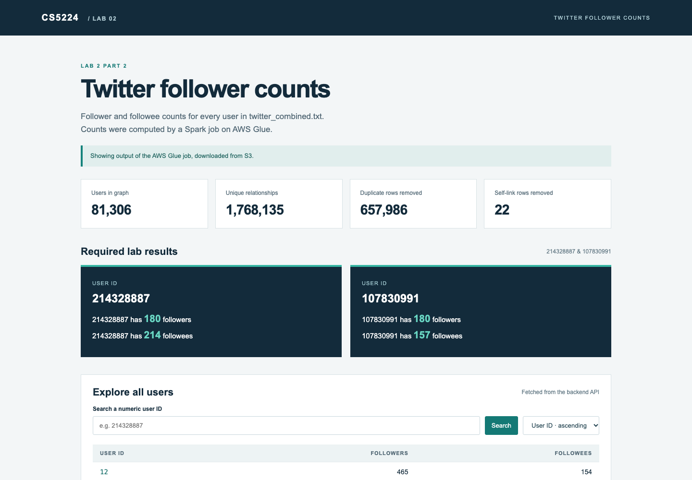
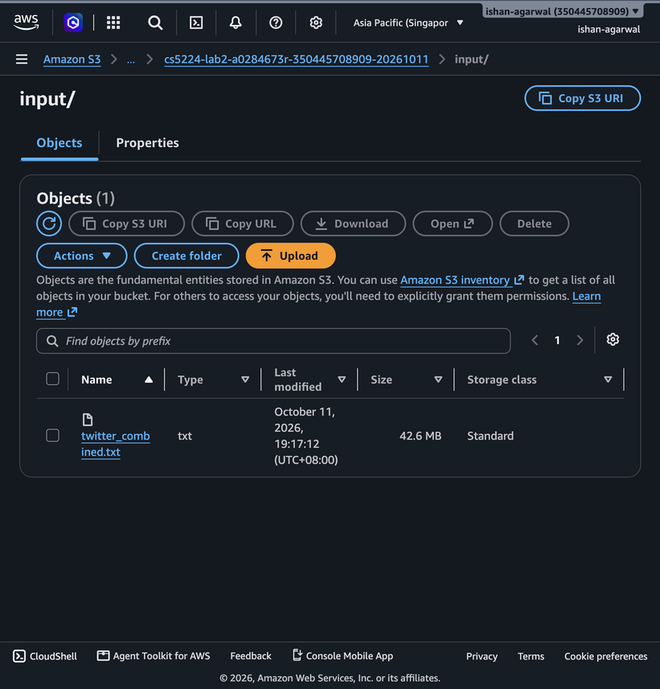
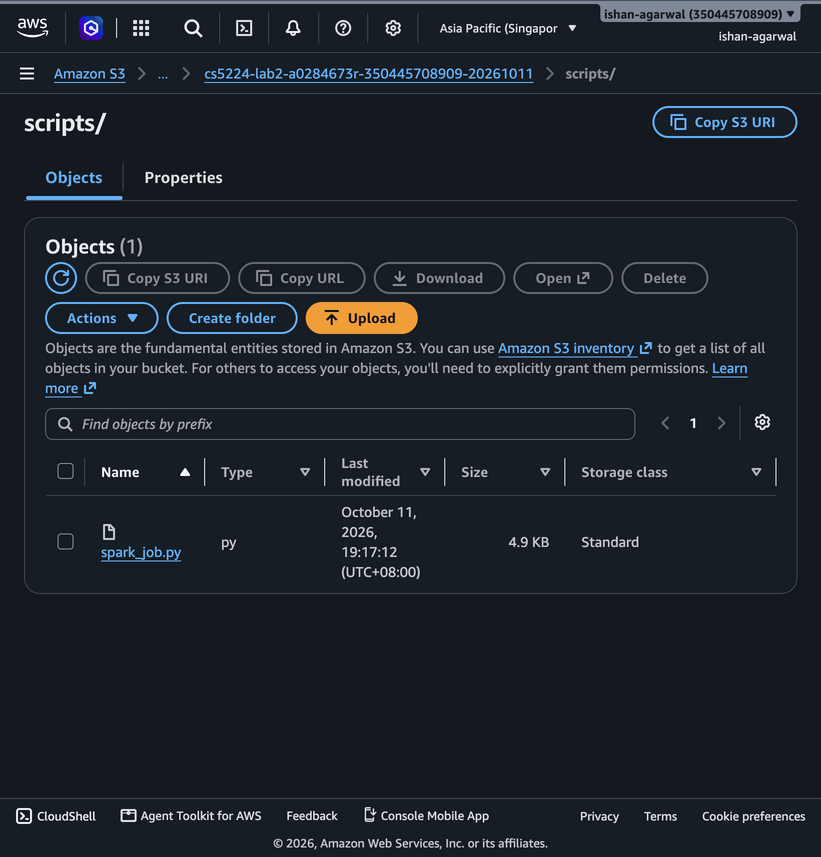
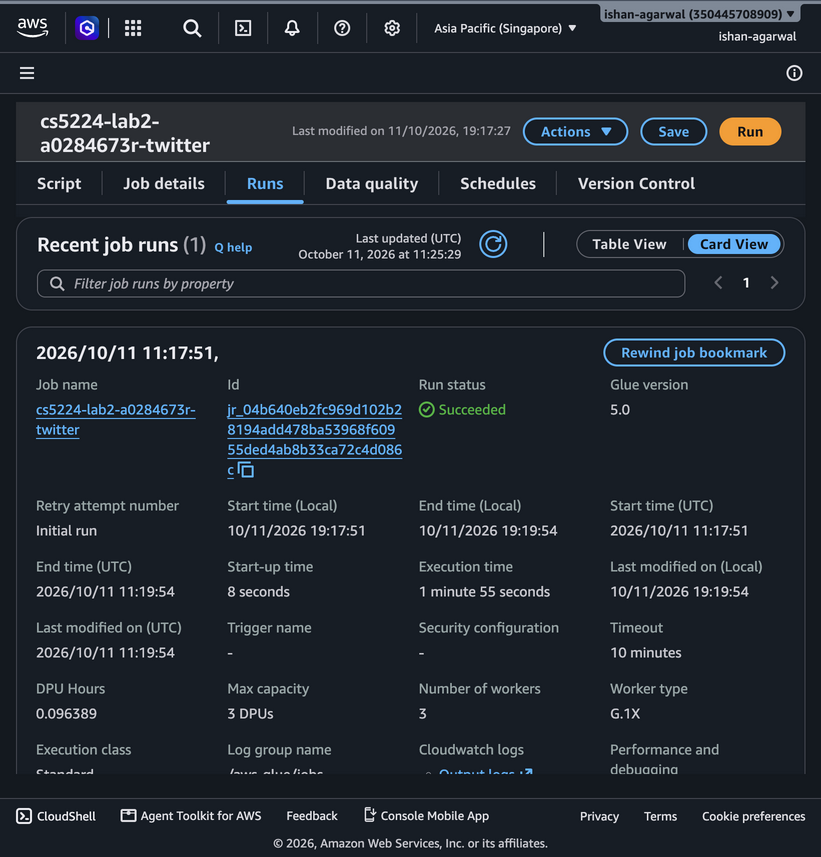
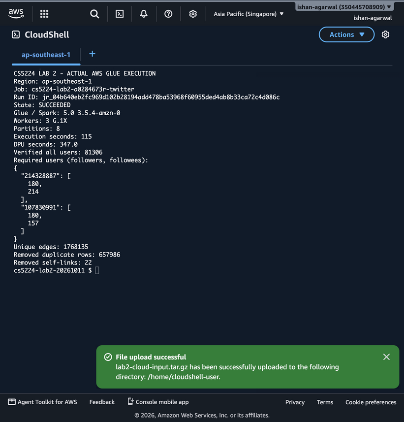
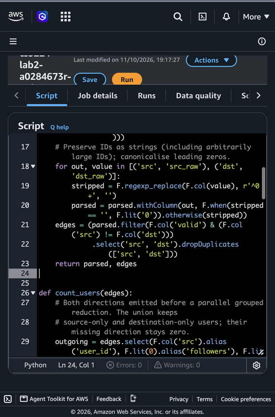
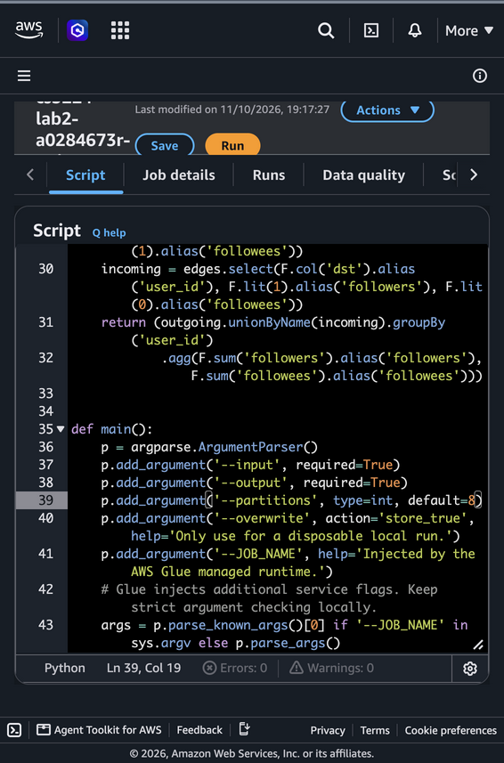

Cloud Services
Name: Ishan Agarwal
Student ID: A0284673R
Cloud provider for Part 2: AWS, region ap-southeast-1 (Singapore)
Deployment model. I would use a hybrid cloud. Each hospital keeps its identifiable patient records in its own private cloud or on-premises system, and the shared analytics platform runs on a public cloud provider.
Before any data leaves a hospital, an export service on the hospital side removes the fields the analytics do not need and replaces patient identifiers with pseudonyms. Only this reduced data is sent to the public cloud. The table that maps a pseudonym back to a real patient never leaves the hospital. I chose this split because the strict governance requirement is mainly about identifiable data, and that data stays under each hospital's control. The analytics part is what needs to grow quickly, and that is where public cloud is useful. If the hospitals can agree on common rules for ownership and access, the shared platform could also be run as a community cloud that only healthcare organisations use. I would still keep the identifiable data private in that case.
Inside the SaaS, each hospital is a separate tenant with its own encryption keys and access roles. The tenant is checked on the server for every query, so one hospital cannot see another hospital's data. All data is encrypted in transit and at rest, every access is logged, and the data is stored in a region inside the country to meet data residency rules. National reports that combine hospitals only use aggregated data.
Scaling architecture. I would scale horizontally with auto scaling instead of moving to a bigger server. The web and API layer is kept stateless and runs as several instances or containers behind a load balancer, spread over more than one availability zone. An auto scaling group adds instances when CPU usage or request count goes up during an outbreak and removes them when demand drops, so the extra capacity is only paid for while it is needed. Heavy analytics jobs are put on a queue and processed by a separate pool of workers (for example a Spark cluster) that scales with the length of the queue. This stops a spike in report requests from slowing down the normal dashboards. To scale nationally I would partition the data by hospital and region, deploy the platform in more than one region if needed, and keep a second region for disaster recovery.
The downside is that a hybrid setup is harder to operate and depends on the network link between each hospital and the cloud. I still think it is the right choice here. A fully private setup would struggle to handle outbreak spikes without buying a lot of spare hardware, and putting all raw patient data in a public cloud would make the governance requirement much harder to meet.
Service model. I would use PaaS. The bank wants to modernise the application, not only move it, and PaaS fits that best. With a managed application platform (for example AWS Elastic Beanstalk or ECS on Fargate) and a managed database (for example Amazon RDS), the provider handles the servers, operating system patching, scaling and backups. The bank's developers can spend their time breaking the old application into smaller services instead of looking after infrastructure. The bank still controls its own code, data, user access and configuration, which it needs for compliance.
I would not use IaaS as the main model because the bank would still have to manage and patch its own operating systems, which is a large part of what makes the legacy setup expensive. IaaS could be used for a short time for legacy components that cannot be changed yet (a "lift and shift" step). SaaS does not fit because this is the bank's own application. A ready-made SaaS product would not give the bank enough control over how its sensitive data is processed and stored.
Deployment model. I would use a hybrid cloud. The most sensitive data, such as customer account records and the encryption keys, stays in the bank's private cloud or data centre where the bank has full control and can show the regulator exactly where it is. The modernised application services that do not need to store that data run on the public cloud PaaS and connect to the private side over a private link such as AWS Direct Connect or a site-to-site VPN. I did not go fully public because some regulators expect certain data to stay on premises. I also did not go fully private, because then the bank has to build and run its own platform and loses most of the benefit of PaaS.
For compliance I would choose a provider and region that the bank's regulator accepts (in Singapore this means following the MAS Technology Risk Management Guidelines), encrypt data with keys the bank manages, use least-privilege IAM with MFA, and keep audit logs of all access. I would migrate one part of the legacy system at a time and keep the old system running until each new part has been tested, so there is always a way to roll back.
I used AWS for this part. The dataset and my PySpark script are stored in an S3 bucket, and the analysis runs as an AWS Glue Spark job. The backend is written in Python and the frontend is a plain HTML and JavaScript page. Figure 1 shows how the parts connect.
The steps for one run are:
twitter_combined.txt and spark_job.py to the S3 bucket and creates the Glue job.Each line A B means A follows B, so A gets one followee and B gets one follower. The spec
says the file has not been cleaned, so I checked it before writing the job. There are no blank or
malformed lines, but there are a lot of repeated lines and a few lines where a user follows themselves.
I made these decisions:
A B appears more than once, it is counted once. A B and B A are different relationships and both count.0123 and 123 count as the same user.| Item | Count |
|---|---|
| Lines in the file | 2,426,143 |
| Blank or malformed lines | 0 |
| Self-follow lines removed | 22 |
| Duplicate lines removed | 657,986 |
| Unique follow relationships left | 1,768,135 |
| Distinct users | 81,306 |
These are the results for the two users in the spec, in the required format:
214328887 has 180 followers 214328887 has 214 followees 107830991 has 180 followers 107830991 has 157 followees

This is the raw response from the backend endpoint that the frontend calls for these two users:
GET /api/users?ids=214328887,107830991
{"users": [{"user_id": "214328887", "followers": 180, "followees": 214},
{"user_id": "107830991", "followers": 180, "followees": 157}],
"missing": []}
The frontend is one HTML page with CSS and plain JavaScript. The backend serves the page, and the
script uses fetch to call the backend's JSON API, for example
/api/users?ids=214328887,107830991. It shows "UserID has N followers/followees" for both
users. It also has a searchable, paged table of all users. (49 words)
The backend is written in Python and has two parts. The job runner (glue_cloud.py, run in
AWS CloudShell with boto3) uploads the dataset and Spark script to S3, creates and starts the AWS Glue job,
checks its status until it succeeds, then downloads the result files from S3 and verifies them. The API
server (server.py, Python standard library) loads these results, checks that the totals add
up, keeps the counts in memory, and serves them as JSON through /api/users and
/api/summary. It also serves the frontend files. (87 words)
For the analysis I used AWS Glue, which runs Apache Spark jobs without me having to set up a cluster.
I first tried EMR Serverless, but my account is on the AWS free plan and the EMR API returned
SubscriptionRequiredException. Glue was available on the same account and also runs Spark, so
I switched to it. The docstring at the top of my script still mentions EMR Serverless from that first
attempt.
The job settings were Glue 5.0 (Spark 3.5.4), 3 workers of type G.1X (4 vCPU and 16 GB memory each), 8 partitions, a 10 minute timeout and no automatic retries. The input path and output path in S3 are passed to the script as job arguments. The run on 11 October 2026 succeeded on the first attempt and took 115 seconds of execution time. Glue reported 347 DPU-seconds, which at the Singapore rate of US$0.44 per DPU-hour is about US$0.04.
The full script is in Appendix A. It works in the same map and reduce style as MapReduce:
clean_edges). Each line is checked with a regular expression and split into a source and destination ID. Malformed lines and self-follows are filtered out, then dropDuplicates removes repeated pairs. This step shuffles the data across workers, so a duplicate is removed even if its copies were in different partitions.count_users). For each unique edge A B the job emits two records: (A, followers=0, followees=1) and (B, followers=1, followees=0).The screenshots below show the job running on AWS.

input/ in the S3 bucket.
scripts/ in the same bucket.



Before running on AWS I tested the same script with a local Spark install (local[4], 8
partitions). I also wrote a short plain Python version (reference.py) that uses a set to
remove duplicates and a counter to count followers and followees. The Glue output matched it for all
81,306 users. As a sanity check, the total number of followers and the total number of followees across
all users are both 1,768,135, which is the number of unique edges. That has to be true because every edge
adds exactly one follower and one followee.
If I was doing this for real I would also host the API server on AWS (for example on Lambda behind API Gateway, reading the results straight from S3) instead of running it on my laptop. I left that out because the spec only asks for the analysis to run on the cloud.
I used AI tools in this lab. I used Manus AI to help me understand the requirements, draft the Part 1 answers, write and debug the frontend, backend and Spark code, set up and run the Glue job from my own AWS session, check the results and take the screenshots. I then used Claude to rewrite the report text and layout. I am responsible for everything in this submission.
analysis/spark_job.py)This is the script that was uploaded to S3 and run by the Glue job.